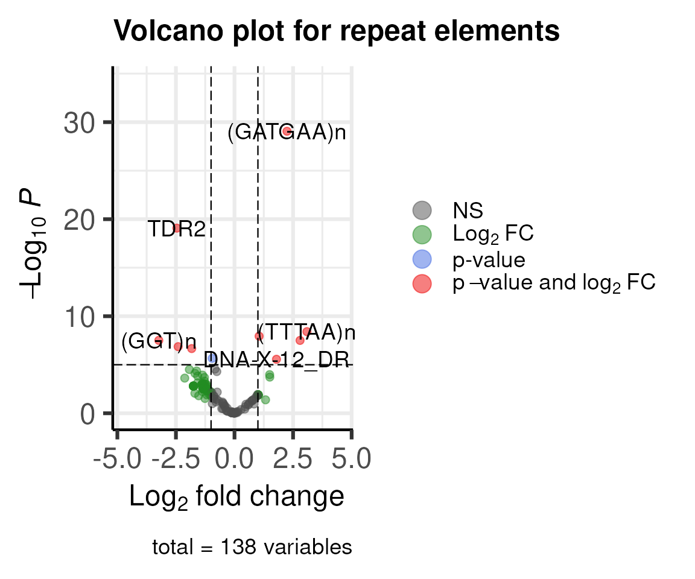
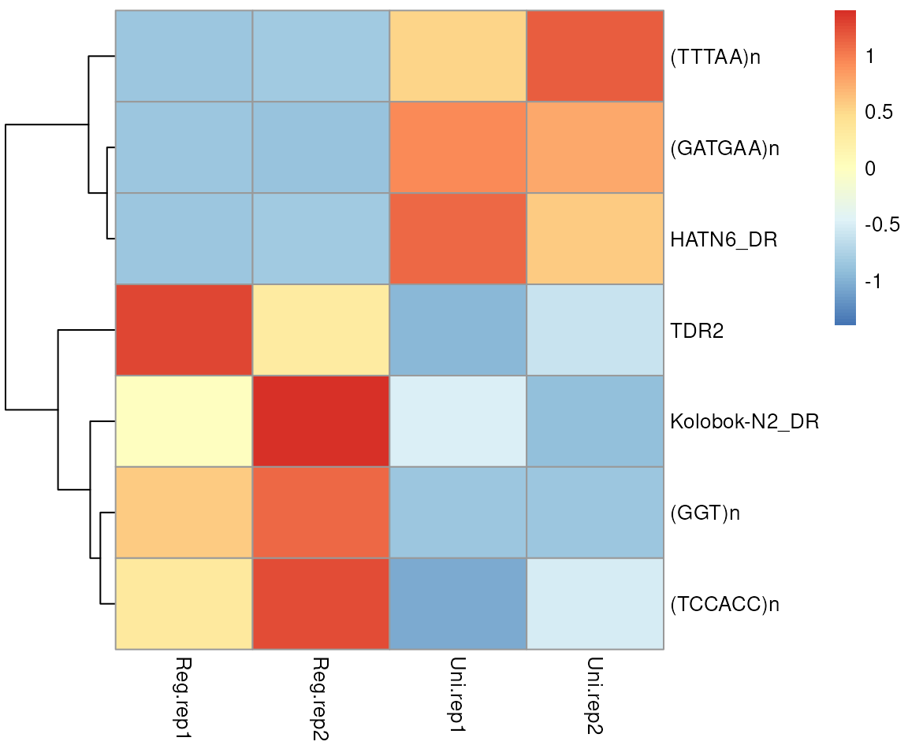
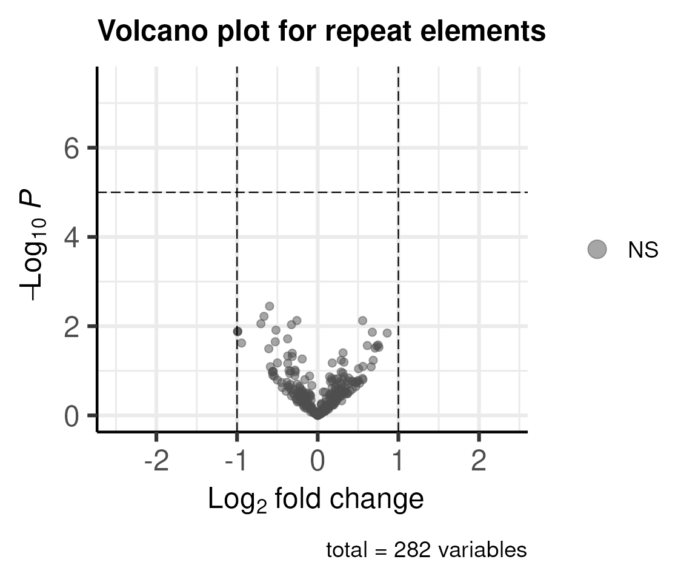
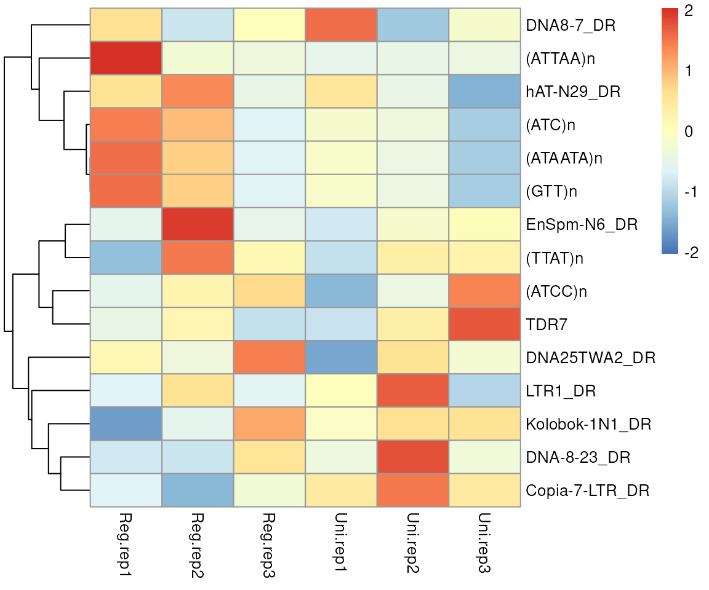

Transposable elements (TEs) play a role in fostering genetic diversity, instigating genome rearrangements, and exerting both positive and negative effects on the host organism. The regulation of these elements constitutes a dynamic and intricate process, involving host defense mechanisms to control their activity. The REdiscoverTE, presented in 2019 by Kong et al.1, showcased remarkable accuracy in TE quantification. It stands out as a significantly more comprehensive and accurate method for robust, whole-transcriptome quantification.
Nevertheless, the existing REdiscoverTE is constrained by the human genome assembly GRCh38. To broaden the scope of annotation to encompass more species, the ratte package has been devised. This package leverages the resources available within the Bioconductor community to prepare the necessary sequence files and annotations.
Here is an example using ratte with a subset of RNA-seq data.
First, install ratte and other packages required to run the
examples. Please note that the example dataset used here is from
zebrafish. To run analysis with dataset from a different species or
different assembly, please install the corresponding BSgenome and TxDb.
For example, to analyze mouse data aligned to mm10, please install
BSgenome.Mmusculus.UCSC.mm10, and
TxDb.Mmusculus.UCSC.mm10.knownGene. You can also generate a
TxDb object by functions makeTxDbFromGFF from a local gff
file, or makeTxDbFromUCSC,
makeTxDbFromBiomart, and makeTxDbFromEnsembl,
from online resources in GenomicFeatures package. The BSgenome
package can be created by BSgenomeForge package.
Please note that the example dataset used here is from a small subset of zebrafish fin regeneration2.
The reference transcriptome includes:
Distinct RNA transcript sequences prepared by
GenomicFeatures::extractTranscriptSeqs function for output
of GenomicFeatures::exonsBy at transcript level.
Distinct sequences representing RE-containing introns by
GenomicFeatures::intronicParts.
Distinct RepeatMasker elements in the intergenic region.
In this manual, we will use the fish genome.
library(AnnotationHub)
library(BSgenome.Drerio.UCSC.danRer11)
## set genome, Drerio is a shortname for BSgenome.Drerio.UCSC.danRer11
genome <- Drerio
library(TxDb.Drerio.UCSC.danRer11.refGene)
txdb <- TxDb.Drerio.UCSC.danRer11.refGene ## give it a short name
ah <- AnnotationHub()
(rmsk <- query(ah, c('RepeatMasker', 'Zebrafish')))## AnnotationHub with 1 record
## # snapshotDate(): 2025-06-23
## # names(): AH98980
## # $dataprovider: UCSC
## # $species: Danio rerio
## # $rdataclass: GRanges
## # $rdatadateadded: 2022-01-31
## # $title: UCSC RepeatMasker annotations (Nov2017) for Zebrafish (danRer11)
## # $description: UCSC RepeatMasker annotations (Nov2017) for Zebrafish -Danio...
## # $taxonomyid: 7955
## # $genome: danRer11
## # $sourcetype: UCSC track
## # $sourceurl: https://functionalgenomics.upf.edu/annotationhub/repeatmasker/...
## # $sourcesize: NA
## # $tags: c("RepeatMasker", "UCSC")
## # retrieve record with 'object[["AH98980"]]'
rmsk <- rmsk[['AH98980']]We will use a subset of fish genome in this manual. Please skip this step if you want try the full fish genome.
rmsk <- readRDS(system.file('extdata', 'danRer11_rmsk_chr25_sub.RDS',
package='ratte'))The prepareSeq function will extract the sequences and
merge the RepeatMasker elements annotation. The saveFasta
function is uesed to export the sequences into a fasta file.
seq_anno <- prepareSeq(genome, txdb, rmsk,
## The subsetGRanges parameter is only used for subset the genome.
## Please remove this parameter for full fish genome.
subsetGRanges=GRanges('chr25:11000000-15000000'))
## Please note that the seq_anno will be used in later.
## It will be good to save it as an R object by
## saveRDS(seq_anno, 'seq_anno.rds')
rna_outfile <- tempfile(fileext='.fa.gz')
saveFasta(seq_anno, rna_outfile)For single cell RNA-seq data, a transcript to gene map file is required.
seq2name <- data.frame(s=seq_anno$seqname, n=seq_anno$repName)
write.table(seq2name, 'seq2name.tsv',
row.names = FALSE, col.names = FALSE, quote = FALSE,
sep = '\t')First we will create salmon index. In this example, we will just
export the command by setting dryrun parameter to TRUE.
prepareSalmonIndex(salmonPath='salmon',
FaFile=rna_outfile,
index='RNA_TEindex',
dryrun=TRUE)## salmon index --threads 2 -t /tmp/RtmpecBqKk/file1f6a36b9f631.fa.gz -i RNA_TEindex -nSecond, we will align reads to salmon index.
alignReadsBySalmon('sample1.R1.fq.gz', 'sample1.R2.fq.gz',
output='sample1_salmon_output',
index='RNA_TEindex',
dryrun=TRUE)## salmon quant --seqBias --gcBias --index RNA_TEindex --libType A --validateMappings --threads 2 -o sample1_salmon_output -1 sample1.R1.fq.gz -2 sample1.R2.fq.gzFor single cell data, there are multiple additional parameters are required.
alignReadsBySalmon('sample1.R1.fq.gz', 'sample1.R2.fq.gz',
output='sample1_salmon_output',
index='RNA_TEindex',
singlecell_protocol = 'chromiumV3',## if your 10x kit ver >= 3
tgMap='seq2name.tsv', ## saved by previous step
whitelist='cellRanger/outs/filtered_feature_bc_matrix/barcodes.tsv.gz',
dryrun=TRUE)Once alignment is done, we will get quantification file named as
quant.sf. In this manual, we will load pre-aligned
files.
quant_sfs <- dir(system.file('extdata', 'RNA-seq', package='ratte'), 'quant.sf',
full.names=TRUE)
qnames <- sub("^.*\\/(.*?).quant.sf", "\\1", quant_sfs)The createDGELists function will extract counts number
from the quant.sf files and generate a list of
edgeR::DGEList object. The available choices for
select_feature are ‘all’, ‘exon’, ‘intron’, ‘gene’, and
‘intergenic’. Here we use gene as an example. Please note
that the DGEList library size and normliazation factor will be
determined by gene level counts.
ys <- createDGELists(quant_sfs, qnames, seq_anno,
select_feature = 'gene',
group=sub('.rep.', '', qnames),
remove.zeros = TRUE)## Removing 26 rows with all zero counts## Removing 1 rows with all zero counts## Removing 4 rows with all zero counts## Removing 60 rows with all zero counts
names(ys)## [1] "repName" "repClass" "repFamily" "rawCounts"
ys[[1]]## An object of class "DGEList"
## $counts
## Reg.rep1 Reg.rep2 Uni.rep1 Uni.rep2
## (A)n 22.143 27.214 27.546 18.000
## (AACTGA)n 11.239 17.000 11.000 4.000
## (AAT)n 11.000 7.000 47.000 46.000
## (AATA)n 6.006 6.000 11.529 4.001
## (AATAA)n 3.000 1.000 4.000 3.000
## 350 more rows ...
##
## $samples
## group lib.size norm.factors
## Reg.rep1 Reg 5778.507 1
## Reg.rep2 Reg 6219.626 1
## Uni.rep1 Uni 11454.850 1
## Uni.rep2 Uni 10224.091 1
##
## $tpm
## Reg.rep1 Reg.rep2 Uni.rep1 Uni.rep2
## (A)n 18.625446 19.844470 28.515103 19.587027
## (AACTGA)n 5.391495 6.781941 5.878126 2.179567
## (AAT)n 9.644679 11.832648 63.671101 68.940900
## (AATA)n 8.228509 9.468091 18.180161 7.120650
## (AATAA)n 3.411824 0.443921 3.333512 3.882252
## 350 more rows ...
library(edgeR)
library(EnhancedVolcano)
library(pheatmap)
y <- ys[['repName']]
keep <- filterByExpr(y)
y <- y[keep, keep.lib.sizes=TRUE]
design <- model.matrix(~y$samples$group)
y <- estimateDisp(y, design)
fit <- glmFit(y, design)
lrt <- glmLRT(fit, coef=2)
res <- as.data.frame(topTags(lrt, n=nrow(lrt)))
EnhancedVolcano(res,
lab=rownames(res),
x='logFC',
y='PValue',
title='Volcano plot for repeat elements',
subtitle = NULL,
legendPosition = 'right'
)
de <- res[abs(res$logFC)>2 & res$FDR<0.05, ]
plotdata <- y$tpm[rownames(de), ]
pheatmap(plotdata, scale = 'row', cluster_cols = FALSE)
We will use tximeta to import the counts number for the
alevin quants. And downstream will treat it same as single cell RNA-seq
data with the tools such as Seurat or scanpy.
library(tximeta)
library(SummarizedExperiment)
library(Seurat)
library(ggplot2)
quants_files <- dir('alevin_output', 'quants_mat.gz',
recursive = TRUE, full.names = TRUE)
names(quants_files) <- c('WT1', 'WT2', 'KD3', 'KD4')
se <- lapply(quants_files, tximeta, type='alevin')
seu <- mapply(se, names(se), FUN=function(.ele, .name){
CreateSeuratObject(counts = assays(.ele)$counts,
project = .name,
min.cells = 0, min.features = 0)
})
## simple merge
seu <- merge(seu[[1]], seu[-1])
## filter cells
p <- VlnPlot(seu, features=c("nFeature_RNA", "nCount_RNA"))
ggsave("QC.pdf", plot=p, width=7, height=7)
seu <- subset(seu, subset=nFeature_RNA > 200 & nCount_RNA<30000)
p <- VlnPlot(seu, features=c("nFeature_RNA", "nCount_RNA"))
ggsave("QC2.pdf", plot=p, width=7, height=7)
## standard pipeline
seu <- NormalizeData(seu, normalization.method = "LogNormalize")
seu <- FindVariableFeatures(seu, selection.method = "vst", nfeatures = 3000)
seu <- ScaleData(seu)
seu <- RunPCA(seu, features = VariableFeatures(object = seu))
seu$group <- ifelse(grepl('WT', seu$orig.ident), 'WT', 'KD')
Idents(seu) <- "group"
head(Idents(seu))## confirm the idents.
seu <- JoinLayers(seu)
markers <- FindMarkers(seu, ident.1='WT', ident.2='KD')
write.csv(markers, 'TE.DE.csv')
## psuedobulk
pseudo_ <- AggregateExpression(seu, assays="RNA",
return.seurat=TRUE,
group.by='orig.ident')
pseudo_$group <- ifelse(grepl('WT', pseudo_$orig.ident), 'WT', 'KD')
Idents(pseudo_) <- 'group'
bulk_markers <- FindMarkers(pseudo_, ident.1 = 'WT', ident.2 = 'KD',
test.use="DESeq2", min.cells.group = 2)The reference are distinct sequences representing RE-containing peaks.
For ATAC-seq/ChIP-seq, to prepare the sequences, the called peaks are required.
library(rtracklayer)
peaks <- import(system.file('extdata', 'merged.peaks.bed.gz',
package = 'ratte'),
format = 'bed')
atac_seq_anno <- prepareSeq(genome, txdb, rmsk, peaks)
atac_outfile <- tempfile(fileext='.fa.gz')
saveFasta(atac_seq_anno, atac_outfile)First we will create salmon index. In this example, we will just
export the command by setting dryrun parameter to TRUE.
prepareSalmonIndex(salmonPath='salmon',
FaFile=atac_outfile,
index='ATAC_TEindex',
dryrun=TRUE)## salmon index --threads 2 -t /tmp/RtmpecBqKk/file1f6a7d3b0462.fa.gz -i ATAC_TEindex -nSecond, we will align reads to salmon index.
alignReadsBySalmon('sample1.R1.fq.gz', 'sample1.R2.fq.gz',
output='sample1_salmon_output',
index='ATAC_TEindex',
dryrun=TRUE)## salmon quant --seqBias --gcBias --index ATAC_TEindex --libType A --validateMappings --threads 2 -o sample1_salmon_output -1 sample1.R1.fq.gz -2 sample1.R2.fq.gzOnce alignment is done, we will get quantification file named as
quant.sf. In this manual, we will load pre-aligned
files.
atac_quant_sfs <- dir(system.file('extdata', 'ATAC-seq',
package='ratte'),
'quant.sf',
full.names=TRUE)
atac_qnames <- sub("^.*\\/(.*?).quant.sf", "\\1", atac_quant_sfs)The createDGELists function will extract counts number
from the quant.sf files and generate a list of
edgeR::DGEList object. The available choices for
select_feature are ‘all’, ‘exon’, ‘intron’, ‘gene’, and
‘intergenic’. Here we use all as an example.
atac_ys <- createDGELists(atac_quant_sfs, atac_qnames, atac_seq_anno,
select_feature = 'peak',
group=sub('.rep.', '', atac_qnames),
norm_level='peak',
remove.zeros = TRUE)## Removing 37 rows with all zero counts## Removing 727 rows with all zero counts
names(atac_ys)## [1] "repName" "repClass" "repFamily" "rawCounts"
atac_ys[[1]]## An object of class "DGEList"
## $counts
## Reg.rep1 Reg.rep2 Reg.rep3 Uni.rep1 Uni.rep2 Uni.rep3
## (A)n 99.994 125 121.979 129.369 106 95.878
## (AAA)n 7.000 7 9.000 9.000 8 6.000
## (AAAAT)n 4.000 4 2.000 9.000 3 1.000
## (AAAC)n 0.000 0 4.000 0.000 1 1.000
## (AAAT)n 12.000 16 9.000 18.000 9 10.000
## 625 more rows ...
##
## $samples
## group lib.size norm.factors
## Reg.rep1 Reg 12166.45 1
## Reg.rep2 Reg 12340.34 1
## Reg.rep3 Reg 12775.16 1
## Uni.rep1 Uni 13935.17 1
## Uni.rep2 Uni 11293.21 1
## Uni.rep3 Uni 11001.10 1
##
## $tpm
## Reg.rep1 Reg.rep2 Reg.rep3 Uni.rep1 Uni.rep2 Uni.rep3
## (A)n 6928.11611 6042.92255 4735.13835 6232.70360 6676.89490 5076.559294
## (AAA)n 26.39531 24.96572 36.47862 28.37995 32.61850 23.779377
## (AAAAT)n 26.38979 27.27461 15.11700 59.20299 23.74255 7.120842
## (AAAC)n 0.00000 0.00000 2375.17580 0.00000 704.50618 680.073838
## (AAAT)n 616.20410 586.90275 312.54305 369.62323 305.60154 121.613880
## 625 more rows ...
y <- atac_ys[['repName']]
keep <- filterByExpr(y)
y <- y[keep, keep.lib.sizes=TRUE]
design <- model.matrix(~y$samples$group)
y <- estimateDisp(y, design)
fit <- glmFit(y, design)
lrt <- glmLRT(fit, coef=2)
atac_res <- as.data.frame(topTags(lrt, n=nrow(lrt)))
EnhancedVolcano(atac_res,
lab=rownames(atac_res),
x='logFC',
y='PValue',
title='Volcano plot for repeat elements',
subtitle = NULL,
legendPosition = 'right'
)
## this is very small test data, we set the cutoff a small number.
atac_de <- atac_res[abs(atac_res$logFC)>log2(1.5) & atac_res$PValue<0.05, ]
plotdata <- y$tpm[rownames(atac_de), ]
pheatmap(plotdata, scale = 'row', cluster_cols = FALSE)
m <- merge(res, atac_res, suffixes = c(".RNA",".ATAC"),
by='row.names')
m <- m[order(-1*sign(m$logFC.RNA)*sign(m$logFC.ATAC),
sqrt(m$PValue.RNA^2 + m$PValue.ATAC^2)), ]
head(m, n=2)## Row.names logFC.RNA logCPM.RNA LR.RNA PValue.RNA FDR.RNA
## 38 DNA-8-9_DR -1.167023 11.39641 9.773658 1.770299e-03 0.0055523021
## 28 DNA-1-3B_DR -1.617957 11.15533 16.697501 4.383871e-05 0.0004653648
## logFC.ATAC logCPM.ATAC LR.ATAC PValue.ATAC FDR.ATAC
## 38 -0.3725652 12.19434 5.48098 0.01922448 0.4170233
## 28 -0.3158131 12.45271 3.91443 0.04787325 0.5400102
head(seq_anno[seq_anno$repName==m[1, 1], ])## DataFrame with 6 rows and 9 columns
## seqname feature repName repClass repFamily
## <character> <character> <character> <character> <character>
## 1 e7b2400cc9f303582e8d.. intron DNA-8-9_DR DNA hAT-Ac?
## 2 a3482d5dfc7994ca57dc.. intron DNA-8-9_DR DNA hAT-Ac?
## 3 b5bc5a06d7fe994c32cf.. intron DNA-8-9_DR DNA hAT-Ac?
## 4 633c41ea5abc604a0f54.. intron DNA-8-9_DR DNA hAT-Ac?
## 5 e76f7d6b0d501f6bd997.. intron DNA-8-9_DR DNA hAT-Ac?
## 6 dab0e247e710af6140ed.. intron DNA-8-9_DR DNA hAT-Ac?
## N idx tx_name
## <integer> <character> <character>
## 1 1 chr25:14166077-14166.. NM_001128347
## 2 2 chr25:14251818-14251.. NM_001128347,NM_0011..
## 3 1 chr25:14879440-14879.. NM_200452
## 4 1 chr25:11941291-11941.. NM_001256664
## 5 2 chr25:12061702-12061.. NM_001256664,NM_0012..
## 6 1 chr25:13092036-13092.. NM_001122750
## seq
## <DNAStringSet>
## 1 GTGCGTACAC...TTTTTGCCAG
## 2 GTGAGTTGAA...TCTTTCCCAG
## 3 GTAGGTGTTC...TGATTGGCAG
## 4 GTAAGCAAGT...CTCTTCGCAG
## 5 GTGAGTCCTG...TCCCCTGCAG
## 6 GTAAGAGCTC...TTTTGTGCAG
head(atac_seq_anno[atac_seq_anno$repName==m[1, 1], ])## DataFrame with 6 rows and 9 columns
## seqname feature repName repClass repFamily
## <character> <character> <character> <character> <character>
## 1 4f471f3c7c118eeb7ddb.. peak DNA-8-9_DR DNA hAT-Ac?
## 2 6a837e21d38fa0082c0f.. peak DNA-8-9_DR DNA hAT-Ac?
## 3 ff2e591b5fc41b6cff86.. peak DNA-8-9_DR DNA hAT-Ac?
## 4 0929655c4ade7d453989.. peak DNA-8-9_DR DNA hAT-Ac?
## 5 b2ec5656f2053898434e.. peak DNA-8-9_DR DNA hAT-Ac?
## 6 ee081dff4dfbe18cb247.. peak DNA-8-9_DR DNA hAT-Ac?
## N idx tx_name seq
## <integer> <character> <character> <DNAStringSet>
## 1 1 chr25:11030723-11030.. NM_001265607 AAAATGCTTT...ATTAGTGTAG
## 2 1 chr25:11324782-11325.. NM_001265607 GGCACTTGTG...ACATATTTAT
## 3 1 chr25:11358819-11358.. NM_001265607 GATGTCTCCT...GTAGGTCTTA
## 4 1 chr25:12255981-12256.. NM_001256664 ACTTTCCTTC...GCCAACTGAC
## 5 1 chr25:12322481-12322.. NM_199670 TTTTTTGTTG...TCGCTGGTTC
## 6 1 chr25:12322481-12322.. NM_199670 GTTCGCGTGG...GTGTGTGAAT
DE <- function(y){
keep <- filterByExpr(y)
y <- y[keep, keep.lib.sizes=TRUE]
design <- model.matrix(~y$samples$group)
y <- estimateDisp(y, design)
fit <- glmFit(y, design)
lrt <- glmLRT(fit, coef=2)
res <- as.data.frame(topTags(lrt, n=nrow(lrt)))
## for ATAC-seq/ChIP-seq, the tx_name were annotated by the nearest
## transcript, you may want to change this with other annotation.
tx_name <- strsplit(res$tx_name, split=',')
tx_name <- lapply(tx_name, unique)
res <- res[rep(seq.int(nrow(res)), lengths(tx_name)), ]
res$tx_name <- unlist(tx_name)
res
}
tx.RNA <- DE(ys[['rawCounts']])
tx.ATAC <- DE(atac_ys[['rawCounts']])
head(tx.RNA[, colnames(tx.RNA)!='seq'], n=2)## feature repName repClass repFamily
## 05fa29a7a02f8c0be64d4a5b26742a72 exon TDR2 DNA TcMar-Tc1
## ffae26ed68dae4a08cfb61df42706275 exon GA-rich Low_complexity Low_complexity
## N idx tx_name
## 05fa29a7a02f8c0be64d4a5b26742a72 1 chr25:13715764-13716675:- NM_001324407
## ffae26ed68dae4a08cfb61df42706275 1 chr25:13525201-13525231:+ NM_200833
## logFC logCPM LR PValue
## 05fa29a7a02f8c0be64d4a5b26742a72 -3.495283 13.62574 14.21923 0.0001626991
## ffae26ed68dae4a08cfb61df42706275 2.240721 17.91356 14.19749 0.0001645899
## FDR
## 05fa29a7a02f8c0be64d4a5b26742a72 0.003620978
## ffae26ed68dae4a08cfb61df42706275 0.003620978## feature repName repClass repFamily N
## 7f8ac9a6f193c08adc00e8ffd48e318b peak DNA-8-9_DR DNA hAT-Ac? 1
## 10187e7a0d6b8c9a71d0986072adf236 peak HAT1_DR DNA hAT-Ac 2
## idx
## 7f8ac9a6f193c08adc00e8ffd48e318b chr25:14166077-14166094:+
## 10187e7a0d6b8c9a71d0986072adf236 chr25:12652401-12652609:+,chr25:12652706-12652799:+
## tx_name logFC logCPM LR
## 7f8ac9a6f193c08adc00e8ffd48e318b NM_001128347 -1.024255 12.47134 10.59651
## 10187e7a0d6b8c9a71d0986072adf236 NM_001122702 1.333532 10.66241 10.31417
## PValue FDR
## 7f8ac9a6f193c08adc00e8ffd48e318b 0.001133015 0.2026396
## 10187e7a0d6b8c9a71d0986072adf236 0.001320128 0.2026396
tx_level <- merge(tx.RNA, tx.ATAC,
by=c('repName', 'repClass', 'repFamily', 'tx_name'),
suffix=c('.RNA', '.ATAC'))
tx_level[1:2, c('tx_name', 'repName', 'feature.RNA',
'logFC.RNA', 'PValue.RNA', 'FDR.RNA',
'logFC.ATAC', 'PValue.ATAC', 'FDR.ATAC')]## tx_name repName feature.RNA logFC.RNA PValue.RNA FDR.RNA
## 1 NM_001003460 DNA-1-11_DR intron -0.4502847 0.67752822 0.8517498
## 2 NM_200042 DNA-4-3_DR intron -1.7903609 0.02994221 0.1209145
## logFC.ATAC PValue.ATAC FDR.ATAC
## 1 0.02855417 0.9578389 0.9900239
## 2 0.50479076 0.1850781 0.9522626## R version 4.5.1 (2025-06-13)
## Platform: x86_64-pc-linux-gnu
## Running under: Ubuntu 24.04.2 LTS
##
## Matrix products: default
## BLAS: /usr/lib/x86_64-linux-gnu/openblas-pthread/libblas.so.3
## LAPACK: /usr/lib/x86_64-linux-gnu/openblas-pthread/libopenblasp-r0.3.26.so; LAPACK version 3.12.0
##
## locale:
## [1] LC_CTYPE=en_US.UTF-8 LC_NUMERIC=C
## [3] LC_TIME=en_US.UTF-8 LC_COLLATE=en_US.UTF-8
## [5] LC_MONETARY=en_US.UTF-8 LC_MESSAGES=en_US.UTF-8
## [7] LC_PAPER=en_US.UTF-8 LC_NAME=C
## [9] LC_ADDRESS=C LC_TELEPHONE=C
## [11] LC_MEASUREMENT=en_US.UTF-8 LC_IDENTIFICATION=C
##
## time zone: Etc/UTC
## tzcode source: system (glibc)
##
## attached base packages:
## [1] stats4 stats graphics grDevices utils datasets methods
## [8] base
##
## other attached packages:
## [1] pheatmap_1.0.13
## [2] EnhancedVolcano_1.27.0
## [3] ggrepel_0.9.6
## [4] ggplot2_3.5.2
## [5] TxDb.Drerio.UCSC.danRer11.refGene_3.4.6
## [6] GenomicFeatures_1.61.4
## [7] AnnotationDbi_1.71.0
## [8] Biobase_2.69.0
## [9] BSgenome.Drerio.UCSC.danRer11_1.4.2
## [10] BSgenome_1.77.1
## [11] BiocIO_1.19.0
## [12] Biostrings_2.77.2
## [13] XVector_0.49.0
## [14] AnnotationHub_3.99.6
## [15] BiocFileCache_2.99.5
## [16] dbplyr_2.5.0
## [17] edgeR_4.7.2
## [18] limma_3.65.1
## [19] rtracklayer_1.69.1
## [20] GenomicRanges_1.61.1
## [21] Seqinfo_0.99.1
## [22] IRanges_2.43.0
## [23] S4Vectors_0.47.0
## [24] BiocGenerics_0.55.0
## [25] generics_0.1.4
## [26] ratte_0.0.6
## [27] BiocStyle_2.37.0
##
## loaded via a namespace (and not attached):
## [1] DBI_1.2.3 bitops_1.0-9
## [3] httr2_1.1.2 rlang_1.1.6
## [5] magrittr_2.0.3 matrixStats_1.5.0
## [7] compiler_4.5.1 RSQLite_2.4.1
## [9] png_0.1-8 systemfonts_1.2.3
## [11] vctrs_0.6.5 pkgconfig_2.0.3
## [13] crayon_1.5.3 fastmap_1.2.0
## [15] labeling_0.4.3 Rsamtools_2.25.1
## [17] rmarkdown_2.29 tzdb_0.5.0
## [19] UCSC.utils_1.5.0 ragg_1.4.0
## [21] purrr_1.0.4 bit_4.6.0
## [23] xfun_0.52 cachem_1.1.0
## [25] GenomeInfoDb_1.45.6 jsonlite_2.0.0
## [27] blob_1.2.4 DelayedArray_0.35.2
## [29] BiocParallel_1.43.4 parallel_4.5.1
## [31] R6_2.6.1 bslib_0.9.0
## [33] RColorBrewer_1.1-3 jquerylib_0.1.4
## [35] Rcpp_1.0.14 bookdown_0.43
## [37] SummarizedExperiment_1.39.1 knitr_1.50
## [39] readr_2.1.5 splines_4.5.1
## [41] Matrix_1.7-3 tidyselect_1.2.1
## [43] abind_1.4-8 yaml_2.3.10
## [45] codetools_0.2-20 curl_6.4.0
## [47] lattice_0.22-7 tibble_3.3.0
## [49] withr_3.0.2 KEGGREST_1.49.1
## [51] evaluate_1.0.4 desc_1.4.3
## [53] pillar_1.10.2 BiocManager_1.30.26
## [55] filelock_1.0.3 MatrixGenerics_1.21.0
## [57] RCurl_1.98-1.17 BiocVersion_3.22.0
## [59] hms_1.1.3 scales_1.4.0
## [61] glue_1.8.0 tools_4.5.1
## [63] data.table_1.17.6 locfit_1.5-9.12
## [65] GenomicAlignments_1.45.1 fs_1.6.6
## [67] XML_3.99-0.18 grid_4.5.1
## [69] restfulr_0.0.15 cli_3.6.5
## [71] rappdirs_0.3.3 textshaping_1.0.1
## [73] S4Arrays_1.9.1 dplyr_1.1.4
## [75] gtable_0.3.6 sass_0.4.10
## [77] digest_0.6.37 SparseArray_1.9.0
## [79] rjson_0.2.23 htmlwidgets_1.6.4
## [81] farver_2.1.2 memoise_2.0.1
## [83] htmltools_0.5.8.1 pkgdown_2.1.3
## [85] lifecycle_1.0.4 httr_1.4.7
## [87] statmod_1.5.0 bit64_4.6.0-1